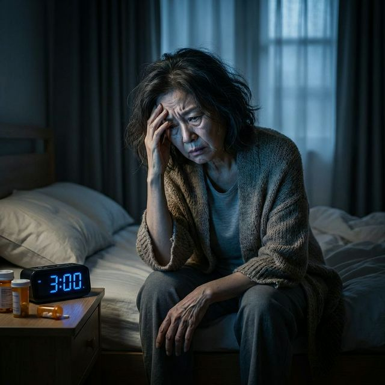

대표님, 어르신들 안녕하시지요? 🙇♂️ 요즘 밤마다 불 꺼진 거실에 홀로 앉아 홈쇼핑 채널만 돌리고 계시지는 않으신지요? 📺
새벽 2시, 3시... 시계만 보며 잠자리를 뒤척이시는 분들이 참 많습니다. 피곤해 죽겠는데 막상 누우면 정신이 말똥말똥해지고, 겨우 잠들어도 새벽에 화장실 가느라 서너 번씩 깨시는 경험, 다들 있으실 겁니다. 💧
최근 충격적인 연구 결과가 발표되었습니다. 수면장애(불면증)를 겪는 50~60대는 평소 잠을 잘 자는 동년배에 비해 치매 발병 위험이 무려 3배 이상 폭증한다는 사실입니다! 🧠⚡ 잠을 깊게 자지 못하면 뇌 속에 찌꺼기(베타아밀로이드)가 씻겨나가지 못하고 겹겹이 쌓여 알츠하이머를 유발하게 됩니다.

불안한 마음에 지푸라기라도 잡는 심정으로 병원에 가서 독한 수면제나 수면유도제를 처방받아 드시는 분들이 꽤 많습니다. 하지만 당장 멈추셔야 합니다! ✋
약에 의존하기 시작하면, 우리 뇌는 스스로 잠드는 방법을 영영 잊어버리게 됩니다. 그렇다면 부작용 없이 안전하게 숙면을 취할 수 있는 방법은 정말 없는 걸까요? 🤔
해답은 바로 자연에 있었습니다! 최근 강남 사모님들과 똑똑한 5060 시니어들 사이에서 '천연 수면제'로 불리며 품절 대란을 빚고 있는 과일이 있습니다. 바로 '타트체리(Tart Cherry)'입니다! 🎉
일반 달콤한 스위트 체리와는 완전히 다릅니다. 타트체리는 특유의 새콤한 맛을 지녔는데, 이 붉은 과육 속에는 수면을 유도하는 핵심 호르몬인 '식물성 멜라토닌'이 문자 그대로 폭포수처럼 쏟아져 나옵니다! 🌊
합성 화학 물질이 아니기 때문에 내성 걱정, 부작용 걱정 없이 매일 편안하게 드실 수 있습니다. 잠들기 1시간 전, 따뜻한 물에 타트체리 농축액을 타서 차처럼 호로록 한 잔 마셔보세요. ☕ 온몸이 서서히 이완되면서 나도 모르게 스르륵~ 깊은 꿀잠에 빠져들게 됩니다. 💤